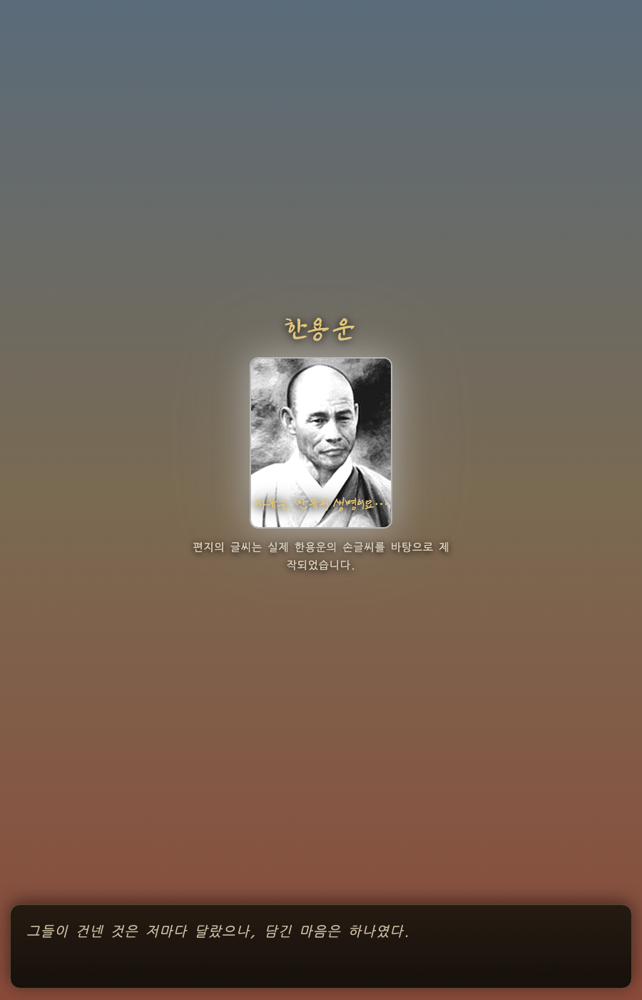
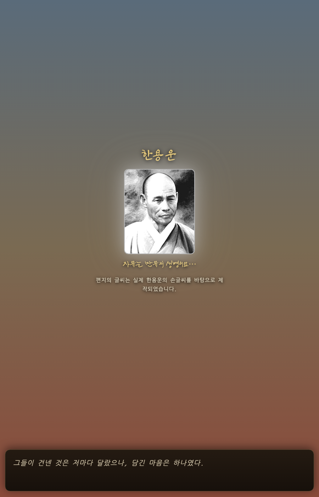
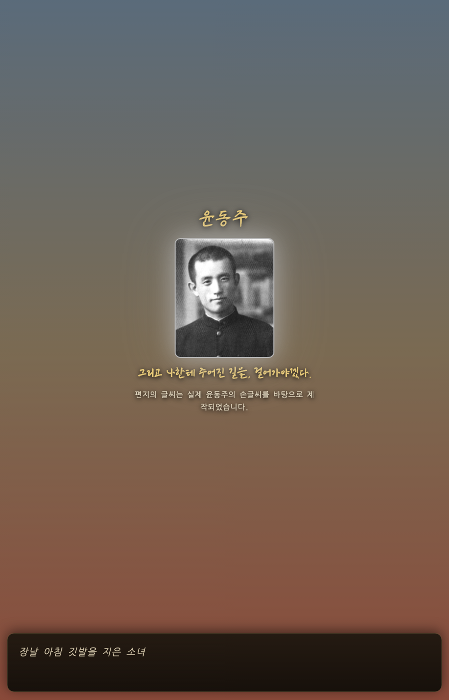

겹침을 없애고 다른 4인과 같은 자리로 옮겼습니다. 한용운 본인의 글씨체와 금빛은 그대로입니다.



붉게 칠한 구간이 배경만 남은 빈 공간입니다. 인물 덩어리가 화면 가운데보다 위에 몰려 있어서 생깁니다.
사진 크기는 그대로 두기로 하셨으니 이건 문제가 아닐 수도 있습니다.
덩어리를 한가운데로 내리면 위아래가 비슷해지고, 지금처럼 두면 대사창과 멀어져 사진에 더 집중됩니다.
두 화면 모두 맨 아래 설명이 "…바탕으로 제 / 작되었습니다"로 쪼개집니다. 8번(편지글 줄바꿈)과 같은 성격이라, 어디서 끊을지 함께 정하겠습니다.